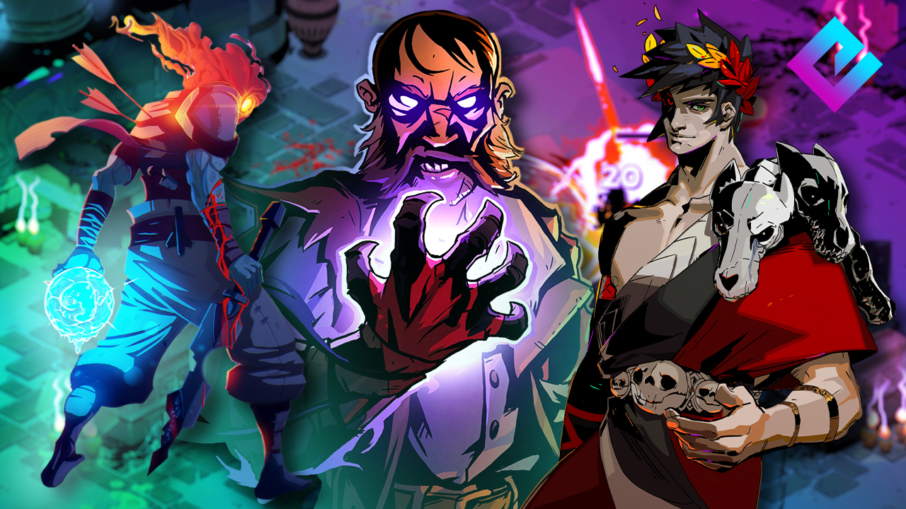

Roguelike (or rogue-like) is a subgenre of role-playing video games characterized by a dungeon crawl through procedurally generated levels, turn-based gameplay, grid-based movement, and permanent death of the player character. Most roguelikes are based on a high fantasy narrative, reflecting their influence from tabletop role playing games such as Dungeons & Dragons.
Though Beneath Apple Manor predates it, the 1980 game Rogue, which is an ASCII based game that runs in terminal or terminal emulator, is considered the forerunner and the namesake of the genre, with derivative games mirroring Rogue's character- or sprite-based graphics. These games were popularized among college students and computer programmers of the 1980s and 1990s, leading to hundreds of variants. Some of the better-known variants include Hack, NetHack, Ancient Domains of Mystery, Moria, Angband, Tales of Maj'Eyal, and Dungeon Crawl Stone Soup. The Japanese series of Mystery Dungeon games by Chunsoft, inspired by Rogue, also fall within the concept of roguelike games.
The exact definition of a roguelike game remains a point of debate in the video game community. A "Berlin Interpretation" drafted in 2008 defined a number of high- and low-value factors that distinguished the "pure" roguelike games Rogue, NetHack and Angband from edge cases like Diablo. Since then, with more powerful home computers and gaming systems and the rapid growth of indie video game development, several new "roguelikes" have appeared, with some but not all of these high-value factors, nominally the use of procedural generation and permadeath, while often incorporating other gameplay genres, thematic elements, and graphical styles; common examples of these include Spelunky, FTL: Faster Than Light, The Binding of Isaac, Slay the Spire and Hades. To distinguish these from traditional roguelikes, such games may be referred to as "rogue-lite", "roguelike-like", or "procedural death labyrinths".
